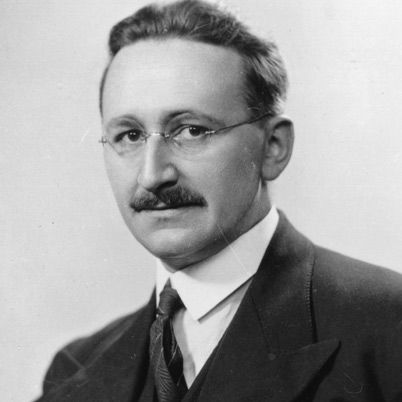

test
Communist Manifesto Online

The best source is marxists.org. As well as the web version, they also have it in audio, Word, PDF, mobi and prc formats.
What is Communism?

Communism is a global, classless society based on social ownership of the means of production that we expect will supersede capitalism.
Such a superior society based on mutual regard rather than profit is made possible by capitalism itself. On the one hand, the high level of economic development achieved under capitalism means that communism would not be shared poverty and toil but rather its opposites - shared abundance and work done willingly, that fully develops the individual's creative powers. On the other hand, capitalism creates the agent of change, the proletariat. This is a class to which most people belong once capitalism is fully developed. It has no interest in the present system and is equipped by modern conditions to begin the struggle to transform society and itself.
Socialism and Communism

Communism will be preceded by a transition period that has usually been called socialism or the dictatorship of the proletariat. This period will begin with a revolution that takes the means of production from the capitalists. Then follows a protracted and tortuous period of class struggle with a new bourgeoisie that will inevitably emerge because it is not possible to immediately eliminate the old division of labor. For some time society will still have a lot of hierarchy, and all levels of government including the very top will be full of phonies pretending to be revolutionaries and also former revolutionaries who have been corrupted by power. In this struggle workers will have to learn to run their own society without masters and be guided by the morality of mutual regard. This struggle will encounter many mishaps and reversals but final victory is premised on the fact that communism is the answer to the problems and limitations of capitalism. To date the only experience we have is of transition failure, in countries where the conditions for success were completely absent.
A Genuine Left would Support Western Civilization
This is an opinion piece that was prompted by the spectacle of pseudo left academics at Australian universities preventing the introduction of a course on Western civilization. It would have been funded by a conservative organization.
In sum, the left differs from conservatives in wanting to take it to the next level while the pseudo left just want to whine about how European history is nothing more than a saga of injustice.
Debunking the Austrian Economics Socialist Calculation Problem
There is nothing about social ownership that prevents the use of a decentralized price system to guide the transfer of goods, or delivery of services, from one establishment to another. And there is nothing about social ownership that rules out having numerous establishments in the same industry all trying different ways to reduce cost and produce better products.

We can do better than Capitalist Liberty
Check out our YouTube Channel

or the Podcast Version
Some Forgotten Marxism
A 28 page booklet [PDF][WEB][epub][Kindle]
It is amazing how there are quite a few people who describe themselves as Marxist, and yet the primary political message of Marx has been buried and forgotten. This booklet will try to resurrect that message. It can be summed up quite simply in the following two points:
1. By developing the productive forces, transforming most people into proletarians rather than peasants and fracturing traditional culture, capitalism creates the necessary conditions for a more advanced classless society where we will all jointly own the means of production and the typical individual will thrive for the first time.
2. Given these conditions, it is then up to us to take advantage of this opportunity and make it happen by transforming ourselves and society.
This alerts us to the importance of capitalist development in those regions where economic and social backward- ness still prevail. It also helps us understand the experience of the "communist" countries. Because of their backwardness, conditions for communism were not present and those who redefined socialism to mean state ownership with them in charge met limited resistance.
A Model of a Socially Owned Economy that Relies on Decentralized Prices - a challenge to the “Austrians” on economic calculation
This paper sets out a model of social ownership based on decentralized pricing with the aim of challenging the view that the Austrian School economists won the socialist economic calculation debate.
Hasn't Communism already Failed?

No. Marxism shows how communism can only emerge from advanced capitalism. It could not be expected to emerge from the backward conditions that existed in regions such as Russia and China in the first half of the 20th century.
What failed was a transition process that only took the first steps before succumbing to the unfavorable circumstances and to bad actors.
Go here for more on this question.

Marx Supported Capitalist Globalization
This is just another instance where Marx and the "Marxists" are not on the same page. [here]

Ayn Rand is wrong. Communism does not sacrifice the individual to society
Hayek’s Road to Serfdom destroys a straw man
Social ownership does not require a dictatorship deciding what we consume, and where we work and live. Nor does it require all economic decisions to be centrally directed; especially not by a dictator.
The Principles of Communism
This is a short and very readable piece written by Frederick Engels in 1847 and is a precursor to the Manifesto.
Email: contact@simplymarxism.com